Project 4 - Neural Radiance Field!
Part 0: Calibrating Your Camera and Capturing a 3D Scan
Part 0.1: Calibrating Your Camera
A sample of my calibration tag pictures:
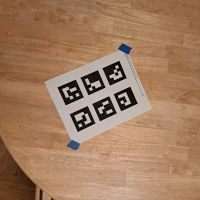
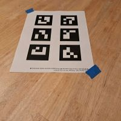
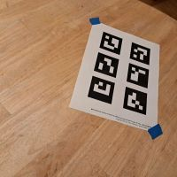
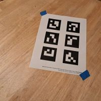
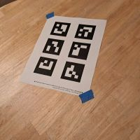
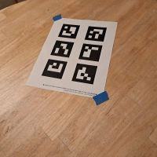
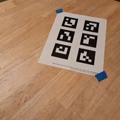
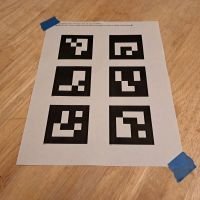
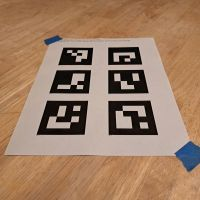
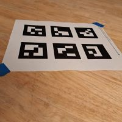
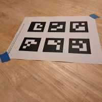
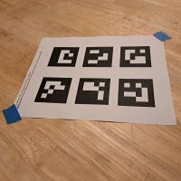
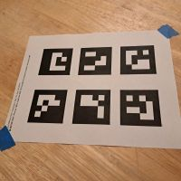
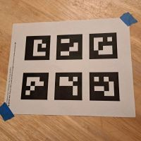
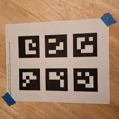
Part 0.2: Capturing a 3D Object Scan
A sample of my panda pictures:
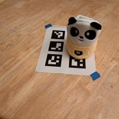
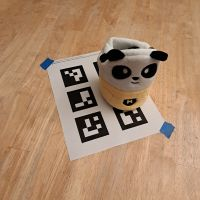
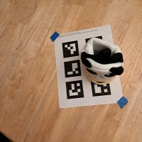
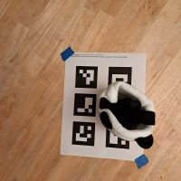
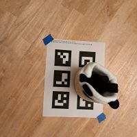
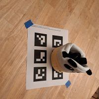
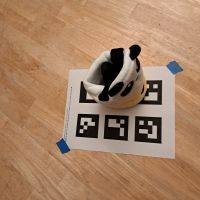
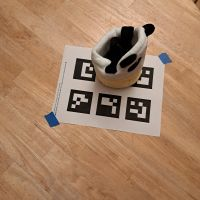
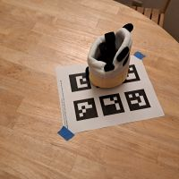
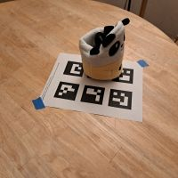
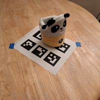
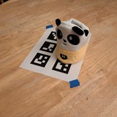
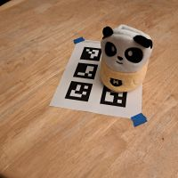
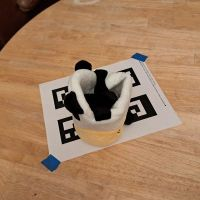
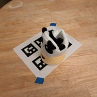
Part 0.3: Estimating Camera Pose
Camera cloud in Viser:
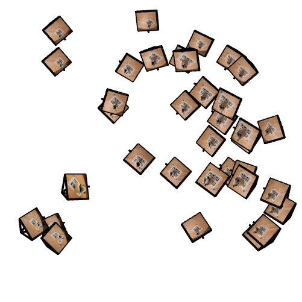
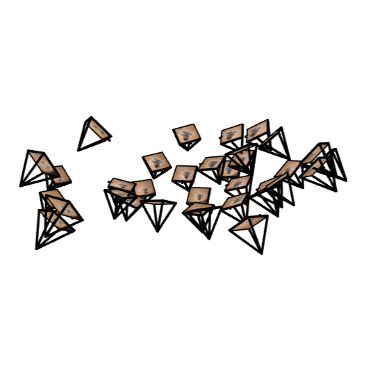
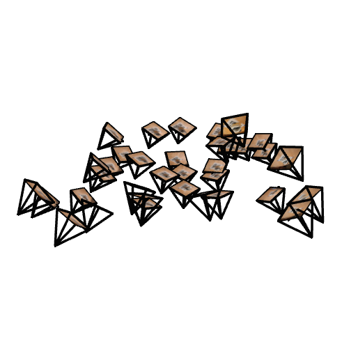
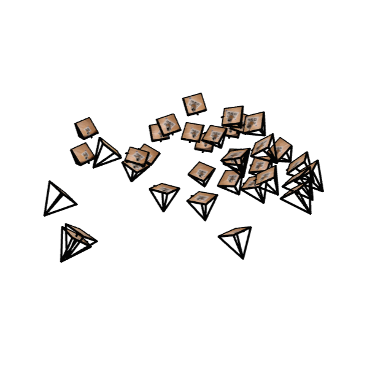
Part 0.4: Undistorting images and creating a dataset
Original image with undistorted image underneath:
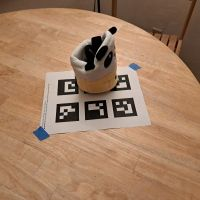
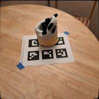
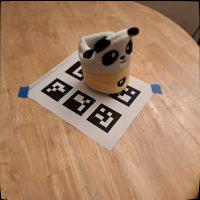
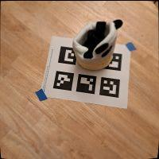
Part 1: Fit a Neural Field to a 2D Image
Model architecture:
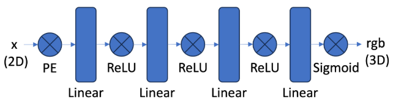
I used the framework provided in the project spec, and I tried 2 different layer widths:
256, 400. For positional encoding, I tried L values of 10 and 20. My optimizer was Adam with a learning rate of 1e-2, and 1,000 iterations with
a batch size of 10,000 was sufficient.
Input images:
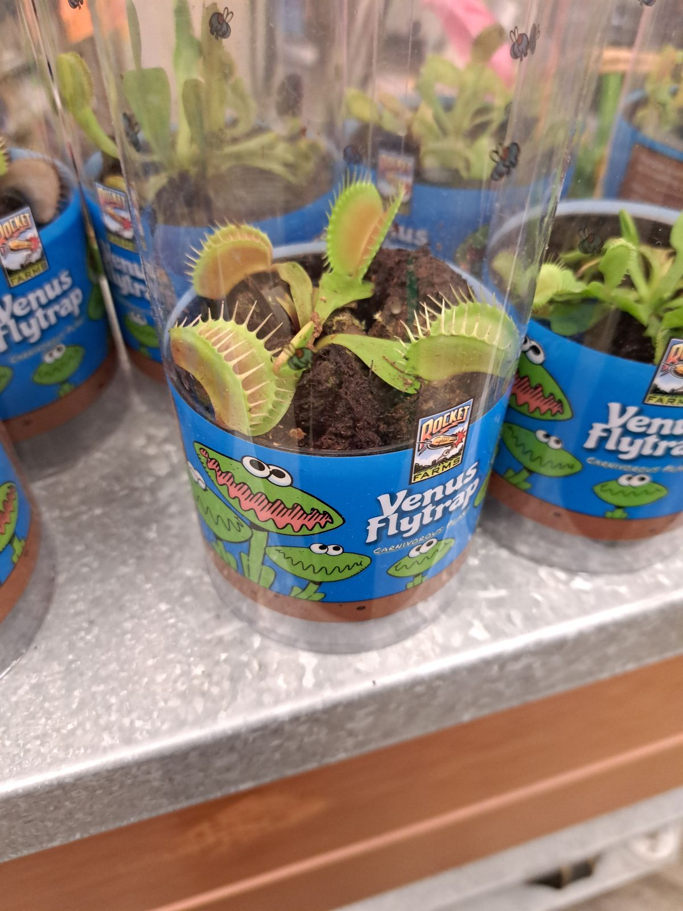
Fox training progression for L=10 and width=256:

original image
iter 500
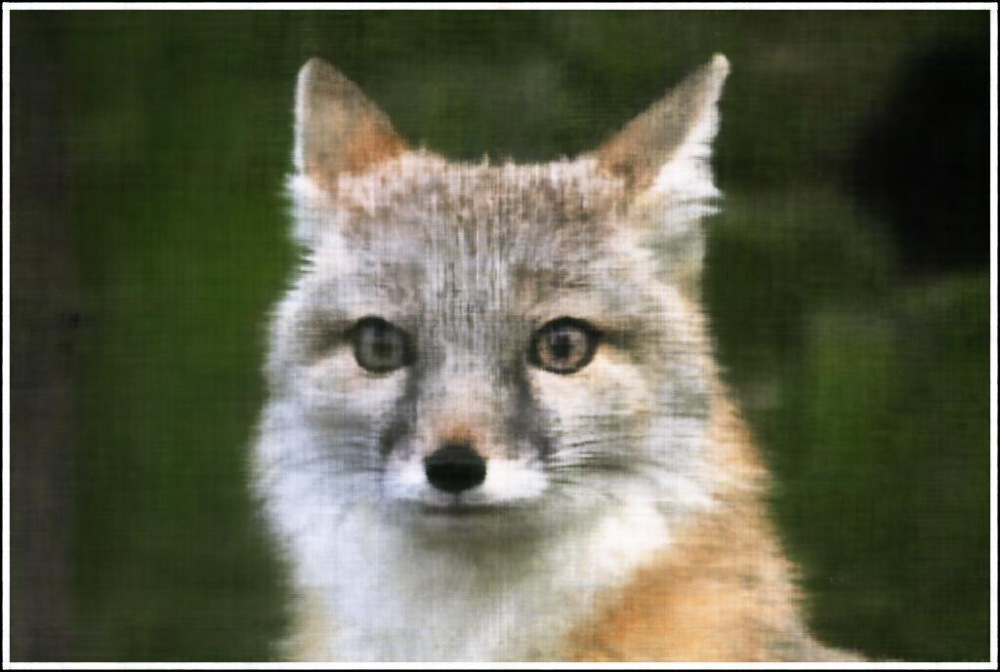
final result
Training loss and PSNR:
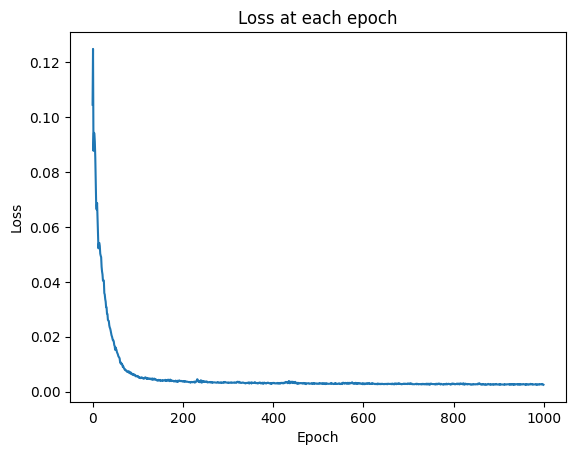
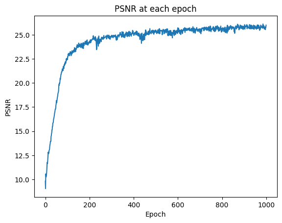
Flytrap training progression for L=10 and width=256:
original image
final result
Training loss and PSNR:
Part 2: Fit a Neural Radiance Field from Multi-view Images
Part 2.1-2.3: Create Rays from Cameras, Sampling, Putting the Dataloading All Together
100 sampled rays and points:
100 samples from the same image:
100 samples from the top left of an image:
My implementation closely followed the project spec, making use of Pytorch for faster operations. My NeRF neural net
structure followed the provided diagram, except I used softplus for density instead of ReLU. In terms of training my NeRFs,
I used an Adam optimizer with a learning rate of 5e-4. After experimentation, I set my near and far values to 0.25 and 0.5, respectively.
Part 2.4: Neural Radiance Field
Training process for view 0:
iter 0
iter 10
iter 100
iter 500
iter 1000
final result
PSNR curve for validation:
And the most exciting part! Spherical rendering gif:
Part 2.6: Training with your own data
Training process for view 0:
iter 0
iter 10
iter 100
iter 500
iter 1000
final result
Training loss:
Even more exciting! Spherical rendering gif:
I've realized that choosing a black and yellow object that almost perfectly
matches the background color may not have been a great idea. But the object is clearer in some
frames, and the movement is definitely circular (cope)!